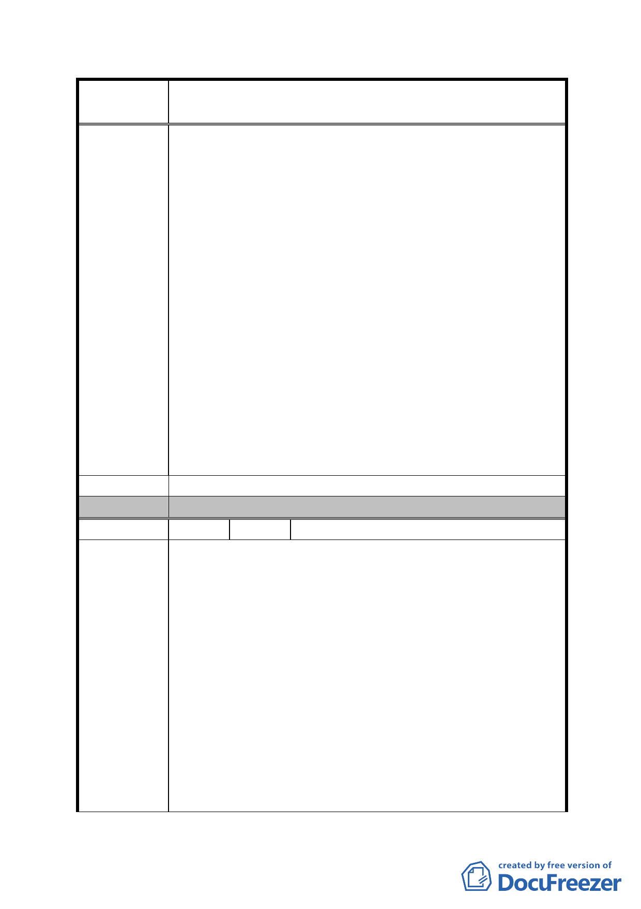

案
名
修訂臺北市「基隆河（中山橋至成美橋段）附近地區土地使
用分區與都市設計管制要點」（北段地區）計畫案
2、管委會使用空間須配置至住宅及商業使用樓層之間，造
成住戶進出之複雜及使用者之不便，亦無義意，建議取
消。
3、商業使用者，若同一樓層有數十商家，規定梯廳、廁所、
茶水間必須集中留設，造成使用者之不便，建議取消。
4、本商業區附近百貨公司及大賣場眾多，小基地只適合中
小企業使用，指定使用組別過於嚴苛，且每一營業之營
業樓地板面積需500平方公尺以上，不適合小基地及中小
企業使用，建議取消。
5、容積率200％已屬低密度開發又限制容積移轉不得超過20
％，商業區如何還繁榮?建議取消。
6、附近已有百貨公司及大賣場，本基地既偏遠又地形狹長，
硬性規定2、3樓以上要做商業使用，中小企業如何願意
進駐，建議取消。
7、小基地僅有一樓梯、一電梯，出入動線要求住商分離，
如何規劃？建議取消。
8、以上規定均適合大基地規劃，請對小基地之土地放寬規
定。
建 議 辦 法 （同上）
委 員 會 決 議 同編號 1。
編 號 3 陳情人 謝平仲（A8 金泰段 81-25 地號）
1、土地使用強度內建蔽率以50％-60% 為原則，因本基地地
形狹長，面寬僅9米、深度70米，本規定造成建築物規劃
之困難及使用之不便，建議取消。
2、管委會使用空間須配置至住宅及商業使用樓層之間，造
成住戶進出之複雜及使用者之不便，亦無義意，建議取
消。
陳情理由
3、商業使用者，若同一樓層有數十商家，規定梯廳、廁所、
茶水間必須集中留設，造成使用者之不便，建議取消。
4、本商業區附近百貨公司及大賣場眾多，小基地只適合中
小企業使用，指定使用組別過於嚴苛，且每一營業之營
業樓地板面積需500平方公尺以上，不適合小基地及中小
企業使用，建議取消。
5、容積率200％已屬低密度開發又限制容積移轉不得超過20
％，商業區如何還繁榮?建議取消。
- 55 -